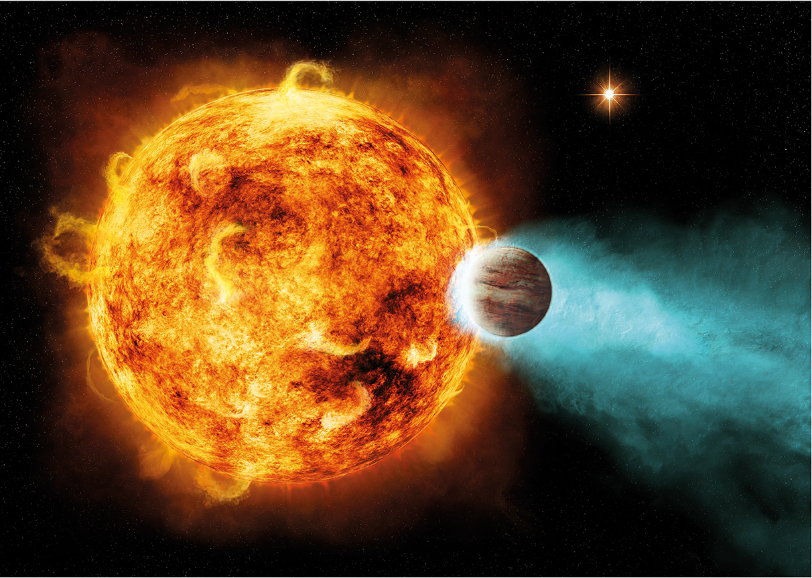
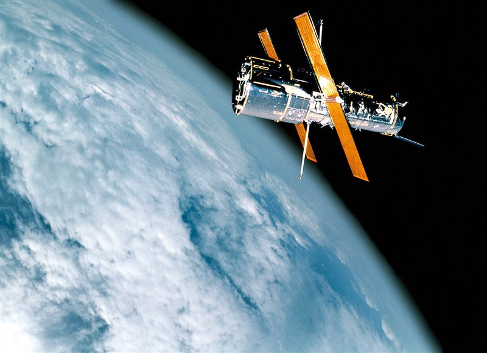

Muchas estrellas tienen algún planeta girando a su alrededor. Algunos reúnen ciertas características similares a la Tierra, lo que aumenta la probabilidad de encontrar vida en ellos. La pregunta clave ahora es si algún día la descubriremos.
Recreación artística que muestra cómo la atmósfera de un exoplaneta se evapora por la cercanía a su estrella.
El Telescopio Espacial Hubble sitúa su órbita a unos 540 kilómetros de la Tierra